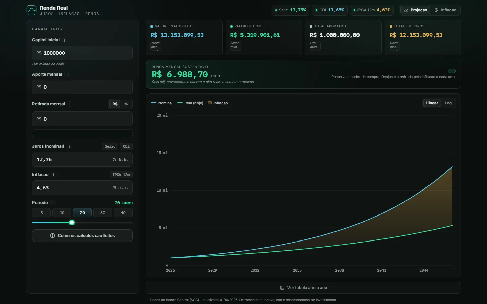
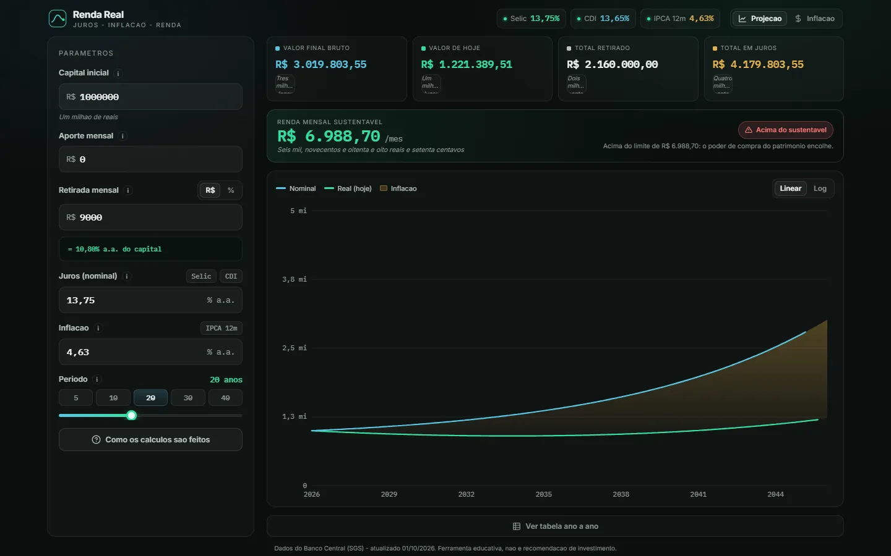
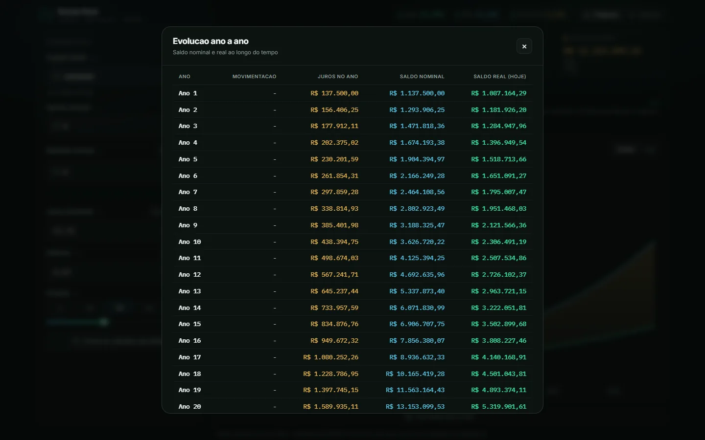
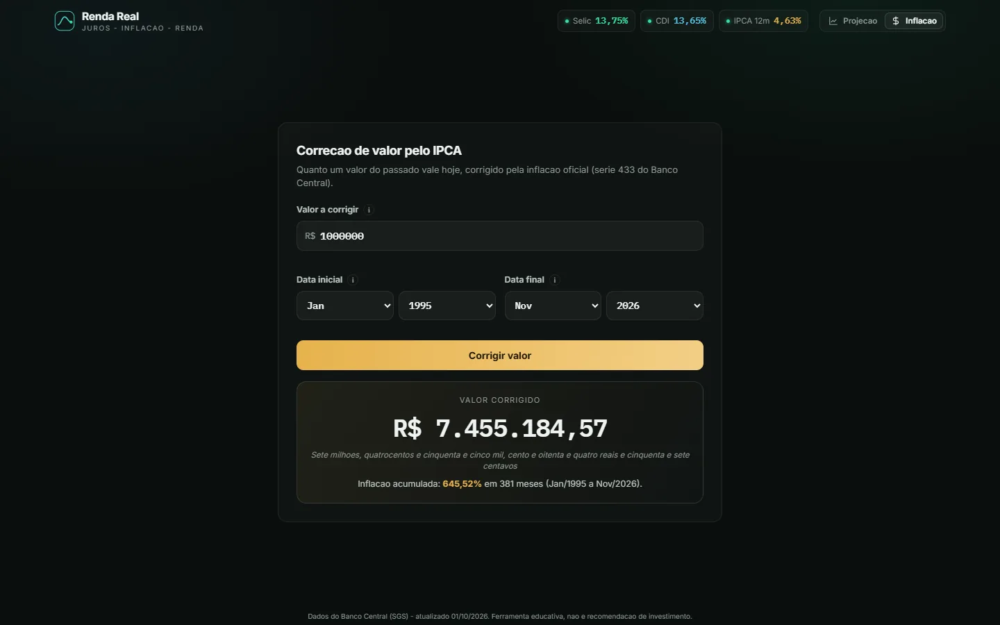
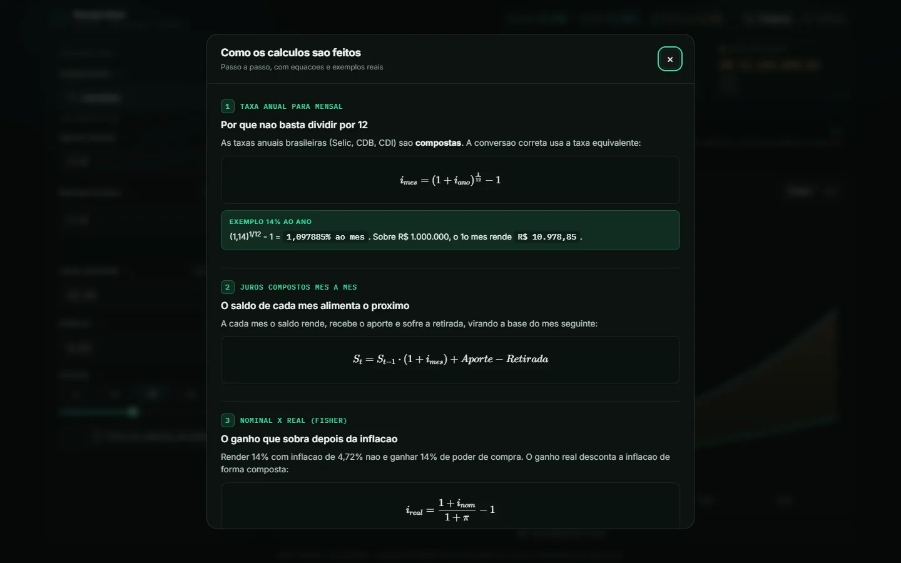

Renda Real
Calculadora pública de juros compostos, renda mensal sustentável e correção de valores pelo IPCA. As taxas Selic, CDI e IPCA são lidas da API do Banco Central quando a página abre.
- Uso
- Público
- Fonte
- SGS do Banco Central, série 433
- Saída
- Tabela ano a ano e gráfico
- Endereço
- bruno-lso.github.io
Telas
Capturas da página publicada. Valores com as taxas lidas do Banco Central na data da captura.










Fluxo de uso
Funcionalidades
- Taxas ao vivoSelic, CDI e IPCA de 12 meses lidos da API SGS do Banco Central. Um botão aplica cada taxa ao campo de juros ou de inflação.
- Retirada em R$ ou %A retirada mensal aceita valor fixo ou percentual do capital; o painel mostra a taxa anual equivalente.
- Renda sustentávelCalcula a retirada mensal que mantém o patrimônio em valor de hoje e avisa quando a retirada passa desse limite.
- Valor por extensoTodo resultado em reais tem a escrita por extenso, para evitar erro de leitura de casas.
- Correção pelo IPCAMultiplica a inflação de cada mês do período, em blocos de até 10 anos por consulta.
- Método abertoUma janela mostra as fórmulas com exemplo numérico.
Cálculo
Taxa mensal
Taxa equivalente composta: (1 + taxa anual) elevado a 1/12, menos 1.
Saldo do mês
Saldo anterior com juros, mais aporte, menos retirada.
Valor real
Saldo dividido pela inflação acumulada até o mês.
Juro real
Fórmula de Fisher: (1 + juro nominal) / (1 + inflação) menos 1.
Renda sustentável
Capital vezes a taxa real mensal equivalente.
Exemplo
R$ 1.000.000 por 20 anos, Selic 13,75% e IPCA 4,63% ao ano
Valores em R$, tirados da tela publicada.
Origem das taxas
Geração
Um script em Python grava o HTML com o CSS, o JavaScript e as taxas de referência embutidos. A página publicada não depende de servidor próprio: só lê a API pública do Banco Central.